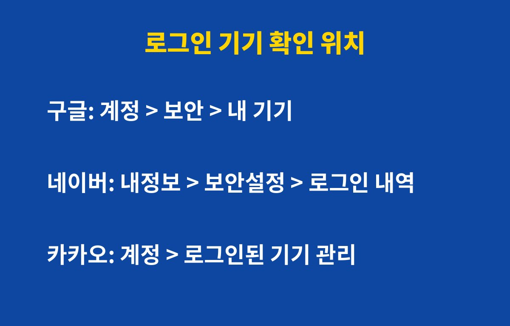

로그인 기기 목록은 구글·네이버·카카오 모두 설정 메뉴에서 3분이면 확인하고 낯선 기기를 바로 로그아웃시킬 수 있어요. 오래 쓴 계정이라면 내가 모르는 기기가 남아 있을 수 있어요.
그런데 목록이 깨끗해 보여도 오히려 방심하면 위험할 수 있어요. 이유는 아래에 있어요.
예전에 쓰던 휴대폰, 회사 PC, PC방이나 친구 컴퓨터에서 로그인하고 로그아웃을 깜빡한 적 한 번쯤 있죠? 이런 기기는 계정에 그대로 남아 있어요. 비밀번호를 바꿔도 이미 로그인된 기기는 유지되는 경우가 있어서, 목록을 직접 정리하는 게 가장 확실해요.
특히 중고로 판 폰이나 오래된 태블릿이 남아 있다면 꼭 지워야 해요. 그 기기를 가진 사람은 내 메일, 사진, 결제 정보에 접근할 수 있는 상태일 수 있으니까요.

| 서비스 | 확인 경로 |
|---|---|
| 구글 | 계정 관리 > 보안 > 내 기기 |
| 네이버 | 내정보 > 보안설정 > 로그인 내역·기기 관리 |
| 카카오 | 카카오계정 > 계정 보안 > 로그인된 기기 관리 |
메뉴 이름은 앱 업데이트에 따라 조금씩 달라질 수 있어요. 찾기 어렵다면 설정 화면의 검색창에 '로그인'이나 '기기'를 입력해 보세요.
기기 목록에는 내가 직접 쓴 기기만 보이는 게 아니라, 접속 시각과 위치가 함께 표시되는 경우가 많아요. 기기 이름은 익숙한데 접속 시간이 내가 자고 있던 새벽이라면 한 번 의심해 봐야 해요.
반대로 낯선 기기가 없다고 안심하고 같은 비밀번호를 계속 쓰면 다른 사이트에서 유출된 정보로 뚫릴 수 있어요. 그래서 목록 점검과 함께 비밀번호 관리, 2단계 인증이 한 세트예요.
첫째, 해당 기기를 바로 로그아웃하세요. 둘째, 비밀번호를 새로 바꾸세요. 다른 사이트와 겹치지 않는 비밀번호가 좋아요. 셋째, 2단계 인증을 켜세요. 이 세 가지만 해도 같은 문제가 반복될 가능성이 크게 줄어요.
혹시 결제나 송금 알림이 낯설게 왔다면 해당 서비스 고객센터에 먼저 연락해서 이상 거래를 신고하는 것도 잊지 마세요.
한 달에 한 번, 휴대폰 알람으로 '로그인 기기 점검' 시간을 정해 두면 습관이 돼요. 오늘 3분만 투자해서 내 계정을 지켜 보세요.
도움이 되셨다면 구독해 주세요. 생활 밀착 IT 꿀팁을 계속 알려드릴게요.
기사·공식 발표 기준이며 출시·가격 정보는 바뀔 수 있어요.